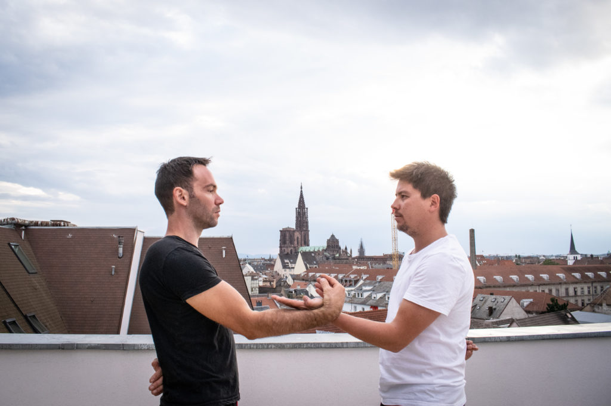

Wingtsun Kungfu
Littéralement le terme « Hoimun Wingtsun » signifie le Wingtsun qui ouvre la porte.
Derrière ce terme, il y a plusieurs significations :
L'idée martiale derrière ce terme est la suivante, une ancienne maxime disait, qu'essayer de combattre contre un bon combattant de Wingtsun, c'est comme essayer d'enfoncer une porte ouverte. Grâce à un entraînement poussé en Chi Sao (« mains collantes »), le bon combattant de Wingtsun, donne la sensation à l'adversaire de tomber dans un trou, de frapper dans le vide ou d'enfoncer une porte ouverte ; tout en trouvant des failles chez son adversaire pour lui asséner de multiples coups.
Il y a également une idée plus philosophique derrière ce terme « Hoimun Wingtsun », qui correspond très bien à l'essence même du style Wingtsun. Dans cette association, nous gardons la porte ouverte aux nouvelles idées afin de pouvoir évoluer, progresser et s'adapter aux changements.
Le Wingtsun n'a cessé d'évoluer depuis sa création. D'ailleurs il est né à partir de plusieurs styles, il a intégré de nouveaux concepts, de nouvelles armes. Pour les initiés, il suffit de repenser à l'intégration du bâton long dans le Wingtsun, qui est le fruit d'un échange, d'une évolution.
Traditionnellement, le Wingtsun n'a cessé d'évoluer, de progresser, de s'adapter aux nouvelles générations tout en conservant l'âme même du style, le Chi Sao.
De ce fait, la volonté de cette association est de transmettre le style Wingtsun comme étant un art martial chinois évolutif ancré dans la tradition permettant d'apprendre à se défendre face à toutes les situations du quotidien.